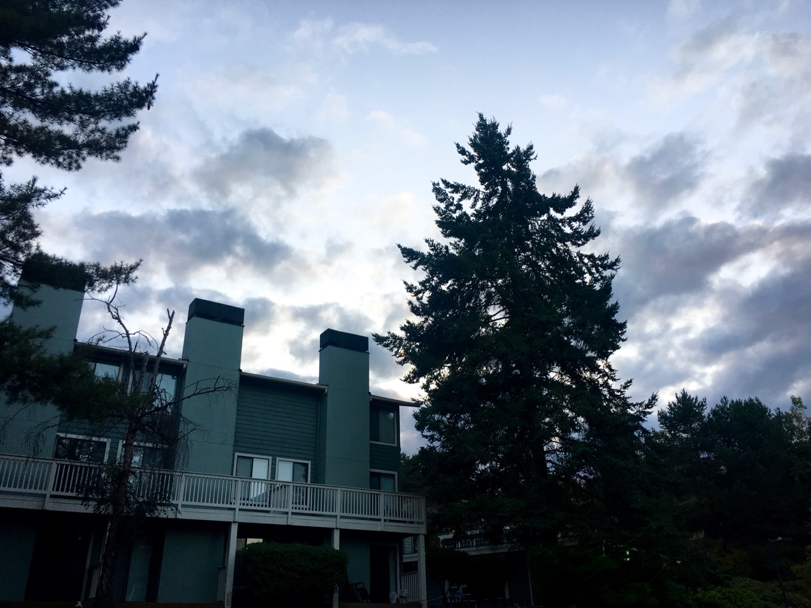

Preface:
Image processing technology doesn’t have a debate directly surrounding it but the effects of advancing image technologies do have some important social ramifications. Technically I could discuss arguments for and against what method to use when interpreting certain collected data but that would not be all that interesting from all the scientific backing in the arguments. A debate typically has a divide due to the subject or situation with no objective answer being subjective.
Introduction:
Advancements in technology is getting better, so much so it is often difficult to keep up. Modern conveniences are progressively making our lives better, in theory, in every possible way. The quickness of change comes with the issue of how society, along with the law, adapt to it. Introduction of new mediums of work leads to ambiguous grey areas with no regulations to abide by.
Typically an action being easier equates to a better quality of life but this is not always the case. Photograph manipulation and enhancement has been increasingly popular trickling down from a just professionals activity to the general population. The popularity comes from it being easier than ever, smart phone cameras are getting better along with mobile software to edit with such as Instagram (Facebook ©).
The questions that arise from these advancements revolve around the ethics in photojournalism and whether or not photography is art. Photography is often held to a stricter standard that what is normally considered ‘fine art,’ but is that a good thing? Before discussing these issues let's get some context and background in other debates surrounding photography.
Photo Manipulation Adoption:
Some older photographers consider digital photo manipulation “cheating”. Anything done within an old fashion darkroom with film is valid but shifting around, or removing objects is the “cheat” (PhotographyTalk). The rationale is that the picture is “no longer a representation of what you and your camera actually saw.” The ability to alter an image to such a degree may cause a certain level of laziness among photographers. You can spend less time on the field since you know what you can remove in the post processing step of production.
Counter to this many photographers believe: “processing an image is as much a part of the workflow as actually taking the shot out in the field” (PhotographyTalk). The rationale for this is that no matter what gear or experience you have the image you capture is never perfect. If you start with accepting the idea of photography being art (talked about later…), then post-processing is simply extending the artists vision with greater creative control.
Problems / Ethics of Photo Manipulation:
The problem with photograph manipulation affects magazines namely nature magazines since the contents may allow “for unrealistic images to be portrayed to the public” (Ignacio Palacios). There typically isn’t an included explicit list of manipulations made to each picture in the magazine. The debate revolves around the photojournalism ethics, with the question: at what point does the amount post-processing make the picture become considered “dishonest?” Since photographs are expected to be enhanced it isn’t stated adding ambiguity to the situation. Photojournalism should be held to a stricter standard than standard photography, but how is this standard determined?
 (Images A and B: How much manipulation is valid for important publication?)
(Images A and B: How much manipulation is valid for important publication?)
Is Photography Art?
A lot of the debates surrounding photography stems from not knowing exactly what standards it should abide by. By categorizing it as art, or emotional expression it gains a lot more afforded freedoms. Often times the issue become what you define as art, is art solely created by living, breathing beings. The argument inferring that since a camera is used to capture the data it is not truly art. If using the same vein of logic then you can say paintings are not art since the paintbrush isn’t a living object. These are both tools to a means of emotional expression.
My Opinions:
I believe photography is a form of art and should be able to have the freedoms that comes with being an art form. The medium can be used very creatively as to create more than whats in the nature world. The camera is just another tool such as a paintbrush or pencil. I understand that photography is a less skillful in nature as you start with a base hinged on reality but photos can be digitally manipulated so much so that it isn’t just nature. Photographs can even be painted over if that amount of created control is needed. With such is diverse and creative medium it is difficult to deny it’s status as an art. Art isn’t creating something out of nothing, art can be compounded together. Art has always built of itself, nothing is created in a vacuum. A photographer takes the art of the natural world and gives it new, additional meaning.
Concerning photo journalism, there should be restriction though. This is because mediums for informing the public has to be as accurate as possible. It is sometimes argued it is accepted to alter an image to portray a message to help stimulate action among readers. To me this seems dishonest to me as it presents the situations in a fictional way. The facts should be presented in the most accurate manner, if the cause is serious a call to action will be implicit.
Digital manipulation of images is the natural evolution of photography for our time. It is an integral part of production and is just another tool to be used for content creation. These tools do give you a lot of control but nothing is perfect, you must still skillful in the original shot. This help can be used as a crutch inciting laziness but this has a net increase in the quality of the photographs taken by people in their daily lives.
Conclusion:
David Campbell says it best with “[t]he change involves understanding the integrity of the image in relation to its function, rather than its philosophical status as an object.” There is no hard and fast rule when it come to photography. Photography being considered art is a very subjective and arbitrary matter that ultimately doesn’t matter. The important conversations come from considering context when trying to figure out what standards on which to hold a particular image. Most pictures have a very loose standard but once you need an image to have a more serious purpose (such as evidence) then some requirements need to new met. It become very difficult to know what is real and fabricated to push an agenda. This is an excellent website showcasing photographs being tampered with throughout history (http://pth.izitru.com/1937_00_00.html). Manipulating pictures to push a certain narrative is not anything new. David Campbell believes photography is inherently artifice and I agree, it is just an “interpretation of the world in front of us” (David Campbell). We should have a set of standards to hold the media to when using it uses photographic imagery to convey vital information.